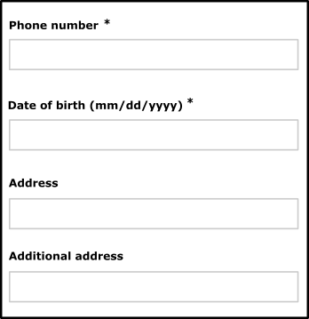
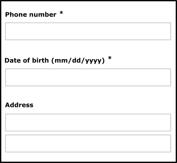
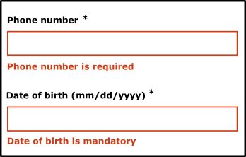

Web design - Forms
Ensure that the user can effectively complete the forms
Usable forms #
Target: everyone and especially people with visual impairments, dyslexia and cognitive disabilities.
When: during design and development.
Description:
Each form input must be associated with a label identifying the function of the field, the type of data and the expected format. This label should be visually close to the field so we can easily mentally link them (especially for people using zoom or a software magnifier, or even for mobile users).
Error messages should clearly identify the invalid field, and if necessary suggest a correction. This applies to input fields, but also to other types of fields (drop-down list, radio button, checkbox…). From the development perspective, this label must be associated with the form field to facilitate the navigation with a screen reader.
Do:

Don’t:

In some cases, it seems unnecessary to associate a label to a form field (search field accompanied by a magnifying glass button for example). In such case you can provide a hidden label, it will not be displayed on the screen but it will be associated with the form field programmatically for easy navigation with a screen reader.
Lastly, the wording of the error messages should be explicit.
Do:

Don’t:

Limit redundant entries #
Target: People with cognitive disabilities (especially with memory difficulties).
When: During design and development.
Description:
The intent of this criteria is to reduce the cognitive effort required by filling out forms with redundant entries.
People with memory problems may have difficulty if a form asks to enter information that has already been entered before. For example: having to enter your email address a second time.
Forcing the user to enter the same information several times can cause stress or cognitive fatigue with the risk of generating incorrect entries.
The user may find it impossible to continue the customer journey, or even abandon the task.
Information previously entered by or provided to the user that is required to be entered again in the same process is either auto-populated, or available for the user to select.
Checklist:
In a process that requires entering information several times (for example, in a multi-step form), check that at least one of the following conditions is met:
- Fields whose data has already been entered are filled automatically.
- User can select data already entered from a list.
- User can check a box to automatically fill a form field with data already entered.
Using the autocomplete feature from the browser is not considered sufficient.
Exceptions:
- Essential uses of input re-entry for things like memory games.
- Security measures such as preventing a password string from being shown or copied.
- When the previously entered information is no longer valid (expired session).
Benefits:
Simplify filling out a form for all users, especially those with cognitive and/or motor problems.
Valid example:
In the case of a purchase form that needs to enter a billing address and a delivery address, if the user has already entered the billing address and the delivery address is the same, then it must be possible to automatically fill in the delivery address based on the information entered for the billing address.
For example, this could be a check box that automatically duplicate information already entered.
Non-valid example:
On an e-commerce website, a user launches a search with the keyword 'coat' and consults the results page.
After consulting the details of an item included in the list of results, if the user returns to the search page, the word 'coat' no longer appears in the search field and no search history is available.
WCAG reference:
3.3.7 Redundant Entry
Accessible authentication #
Target: everyone, especially people with cognitive disabilities.
When: right from the design and during development.
Description:
To be accessible, no step in the authentication process should be based on the user cognitive functions (i.e., memorizing and transcribing a username and password, performing a gesture pattern on a touch screen, solving an enigma), unless that provides at least one of the following:
- an alternative authentication method which does not rely on a cognitive function test - criteria 3.3.8 and 3.3.9,
- a mechanism to assist the user in completing the cognitive function test required to authenticate (i.e., password managers to reduce memory need, possibility to copy and paste to reduce the cognitive burden of re-typing) - criteria 3.3.8 and 3.3.9,
- a cognitive function test to recognize common objects (images, videos, audios) - criteria 3.3.8 and 3.3.9,
- a cognitive function test to identify non-text personal content (images, videos, audios) previously provided to the website by the user - criteria 3.3.8 and 3.3.9.
Good practice:
Compliance with criterion 3.3.9 (AAA) is based on the non-use in the authentication process of methods based on:
- recognition of current objects (images, video, audio),
- identification of non-textual personal content (images, video, audio) previously supplied to the website by the user.
Checklist:
For authentication by login and password, make sure that one of the following conditions is met:
- the user agent (browser and password management applications) automatically fills in the "login" and "password" fields,
- the user can copy his login and password from a local source (e.g., password management application) and paste them into the corresponding fields on the authentication form or in a command-line interface. The format requested by the "login" and "password" fields must be the same as the copied informations, to avoid the user having to transcribe (i.e., enter and copy) these informations.
For a 2-factor authentication system (double authentication), make sure that one of the following conditions is met:
- the user is not asked to copy a verification code. The user must have at least one of the following aids:
- the possibility of copying and pasting the verification code from a password management application, a text message application or a software security key,
- or allow the user agent to fill in the field automatically.
Note: When a verification code must be received or generated by a second device (e.g., SMS received on a cell phone), the ability to send this verification code to the first device is not to be evaluated in this criterion.
- the 2-factor authentication system does not rely on codes, but for example on a USB authentication key, a third-party application (which may or may not be on a 2nd device) asking the user to confirm that he is at the origin of the request, or an authentication method proposed by the device operating system.
For an authentication system in which one of the steps is a captcha, make sure there is a method that doesn't include a cognitive test (remembering, copying a word, recognizing an image given by the website), unless it's based on object recognition or the identification of non-textual personal content.
- If the two-factor authentication is based on recognition of non-textual personal content, the security conditions must prevent a third party from guessing which image is to be recognized.
- If the user is required to transcribe text (e.g., when creating a password for the first time, which will then be stored in password management software), the possibility of showing the characters entered must be proposed.
Users' goal:
Allow users with cognitive disabilities (memory, dyslexia, dyscalculia, limited cognitive abilities) to authenticate.
Do (AA et AAA):
A 2-factor authentication system: authentication on a computer's web browser that requires a verification code received by SMS on the mobile phone. In most cases, the code can be send to the device, where it can then be copied and pasted, for example by copying and pasting it into an email on the phone and sending it to the computer, or by using a clipboard application.
A website uses a login/password for login authentication (satisfying Success Criteria "1.3.5 Purpose of entry" and Success Criteria "4.1.2: Name, role, value"). The user's browser or an integrated third-party password manager extension can identify the function of these 2 fields and automatically fill in the login and password.
A website uses WebAuthn to allow the user authenticate with their device rather than their login and password. The user's device can use any available method. The most common methods on laptops and phones are facial recognition, fingerprints and PIN (Personal Identification Number). The website does not require any particular use; it is assumed that the user will choose the most appropriate method.
A website offers the possibility of connecting with a third-party provider using the OAuth method.
A website requiring two-factor authentication offers several options for the second factor, including a USB key-based method where the user simply clicks a button to enter a code valid for a limited time.
A website requiring two-factor authentication displays a QR code that can be scanned by an app on the user's device to confirm identity.
A website requiring two-factor authentication sends a notification to the user's device. The user must use their device's authentication mechanism (e.g., user-defined PIN, fingerprint, facial recognition) to confirm their identity.
Don't:
Prevent a user from entering a password or verification code in the same format as the one in which it was initially created: for example, a form that asks the user to enter the last 4 digits of his login in 4 different fields.
Exception: the user can copy the code and paste it into the first field. The characters will be automatically distributed into the following fields.
WCAG reference: